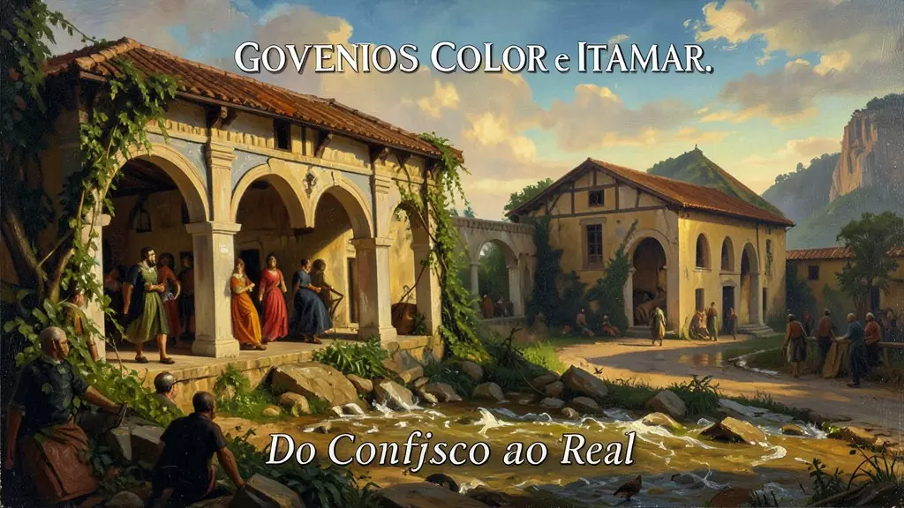
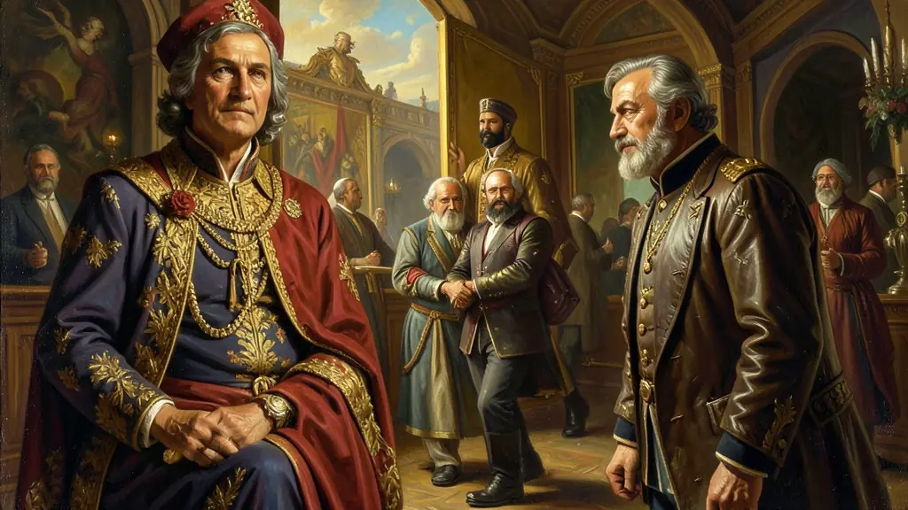
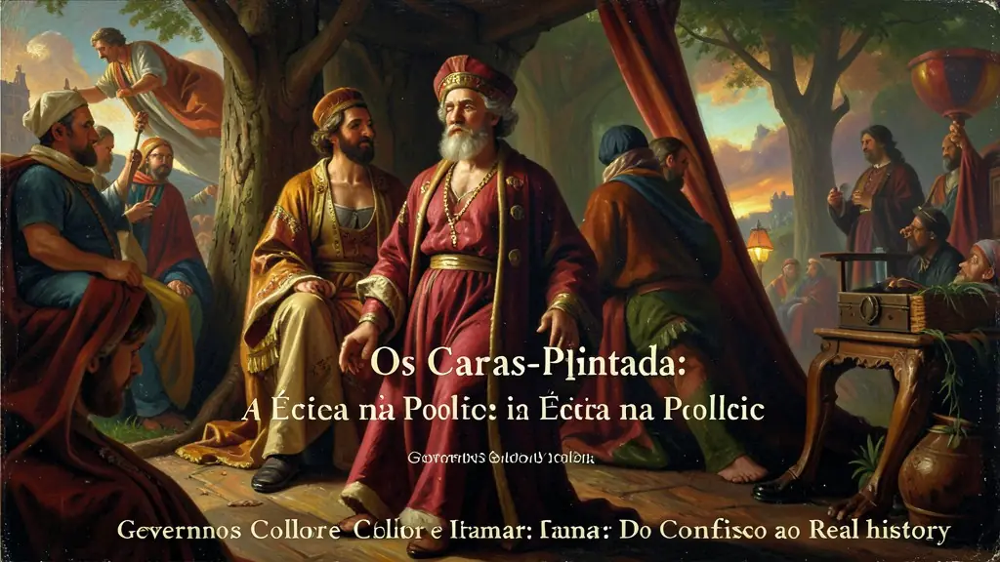

Capítulo 01
1. O Plano Collor: O Dia em que o Banco Parou
Collor acreditava que para matar a inflação precisava tirar o dinheiro de circulação. O sequestro da poupança foi um desastre social: idosos perderam economias de uma vida, empresas faliram e o consumo travou. Foi o remédio mais amargo da economia brasileira, que gerou uma profunda recessão e não conseguiu segurar a inflação a longo prazo. O Brasil descobriu que a modernização via choque podia ser extremamente cruel.

Capítulo 02
2. Neoliberalismo e Abertura: As 'Carroças' de Luxo
Até 1990, o Brasil era uma economia fechada. Collor abriu os portos, permitindo a entrada maciça de eletrônicos e carros estrangeiros. Ele forçou a indústria nacional a competir, o que gerou modernização mas também desemprego e o fechamento de fábricas que não aguentaram o peso tecnológico global. O Neoliberalismo vencia o Protecionismo, mudando o perfil das vitrines brasileiras para sempre.

Capítulo 03
3. Os Caras-Pintadas: A Ética na Política
A juventude brasileira, liderada pela UNE, saiu às ruas de rosto pintado de verde e amarelo. Eles exigiam o fim do governo corrupto de Collor. Foi o maior movimento de massas desde as Diretas Já. O povo provou que a Constituição de 1988 não era apenas papel: ela funcionava para tirar um presidente que traísse a confiança da nação. Collor renunciou minutos antes de ser condenado pelo Senado, perdendo seus direitos políticos por 8 anos.

Capítulo 04
4. Itamar Franco: O Presidente do Fusca e do Real
Visto como um político 'do interior' e emocional, Itamar foi subestimado. No entanto, ele deu carta branca para que acadêmicos e economistas formulassem o Plano Real. Ele incentivou a volta do Fusca e se envolveu em polêmicas no Carnaval, mas sua maior obra foi a estabilidade econômica. Sob seu comando, o Brasil deixou de ser o 'país do amanhã' que nunca chegava para ser um país com moeda forte.
Capítulo 05
5. O Plano Real: A Mágica da URV
Em 1994, o brasileiro não sabia quanto custava o pão no dia seguinte. O Plano Real criou a URV, um indexador que acompanhava o dólar. As pessoas convertiam seus preços para URV e, no dia 1º de julho, essa unidade virou o Real físico. Com juros altos e câmbio fixo, os preços pararam de subir. O pobre pôde comprar iogurte e frango de novo. A inflação, o grande monstro nacional, fora finalmente domada.
Consolidando o turbulento amadurecimento inicial restaurativo cívico, na primeira formidável eleição e sufrágio restabelecidamente presidencial diretos após o jugo do longo dos quartéis, sob efervecênte embalo das promessas e carisma de redenções ilusórias e engodos anti-corrupção, Collor assumiu e inflacionou a jovem democracia enredada da calamidade estagflacionária da superinflacionada catastrófica na confiscação doída avassaladora cruenta brutal sem precedente do congelamento desesperado apoteótico confiscatório calamitoso nos abastados capitais nas famosas poupanças familiares desesperançosas dilaceradoras no traumático fracassado insano do infame e colapsado Plano Collor atordoante suicídio governamental das garantias civis populares desesperadas.
Escândalos dilacerantes abissais dos famigerados e insaciáveis conluios desvios nas corrupções espúrias desenfreadas articuladas e vazadas na CPI impiedosa estrangulante do maquineiro 'esquema obscuro dos faturamentos de PC' inflamaram magistralmente na erupção estudantil do brado retumbantes civis nas cores rebeldes orgulhosos apogeus enrostos pintados catárticos nacional do avassalador 'Caras Pintadas' defenestrando inelutável do insustentável na inédita primeira e amarga impugnação deposto de um civil eleito nas fraldas na nascente redemocratização nacional num impeachment colossal humilhante exemplar histórico exemplar ético exemplar unânime popular em praça aos berros extasiantes.
O legado a decifrar na cronologia ditada, aponta-se impreterível a instabilidade amadurecida do estamento da vice governança o tampão estabilizador na serena de transição cívica conciliatória impulsionada pacato Itamar Franco que articulou de suas hostes uníssono majestoso alicerce intelectual diplomata a ousada revolucionária arquitetura macroeconômica ancorada astuta sob a engenharia nevrálgica genial no lançamento ancorado pacificador e do domador do brutal famélico e bestial urso devastador dragão inflacionário do portentoso formidável Plano Real ancorando e lastreando formidável amarra cambial paritária na nascente pujança da moeda firme de restalbecimento social confiador de consumo pacificador e glorioso de redentora nova dignidade real na economia das repúblicas abaladas na nova recontruida nação no fim dos desastrosos 90.
Fonte: SCHWARCZ, Lilia M. Brasil: Uma Biografia. Cia das Letras, 2015.
Atividades interativas
Questões para fixar
O movimento dos 'Caras-Pintadas', ocorrido em 1992, foi a manifestação popular que culminou em qual evento histórico?
Qual foi a principal estratégia econômica do Plano Real (1994) para conter a hiperinflação brasileira?
Qual foi o principal objetivo do Plano Collor, implementado por Fernando Collor de Mello em 1990?
Qual foi o resultado direto do movimento dos Caras-Pintadas em 1992?
Qual foi a característica principal do Plano Real, implementado em 1994?